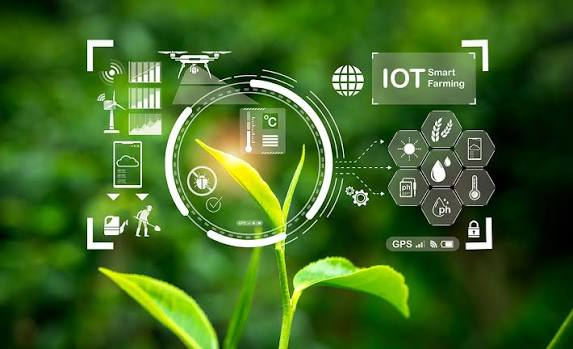
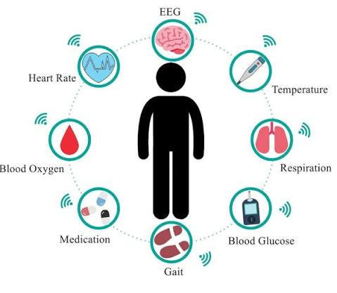

Як і де використовують Інтернет речей
Інтернет речей застосовують від побуту до великих підприємств. У розумних домах він керує світлом, кліматом і безпекою, а фітнес-браслети відстежують показники здоров'я. У медицині датчики дозволяють дистанційно контролювати стан пацієнтів. У промисловості та логістиці сенсори попереджають про поломки верстатів і відстежують вантажі в дорозі. У сільському господарстві система автоматизує полив за даними про вологість ґрунту, а в розумних містах керує світлофорами, вуличним освітленням і комунальними службами для економії ресурсів.

